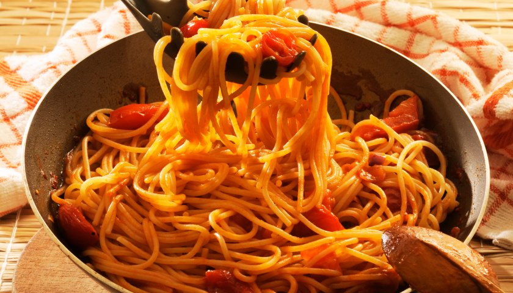

Pasta

Description
make this pasta and give it a change before the week starts!
A good Sunday pasta is unbeatable!
Igredients
- 1 package of spaghetti pasta
- 500g of minced meat
- 2 cans of tomato sauce
- 1 clove of garlic
- 1 piece of onion
- 2 tablespoons of green olives
- 10 basil leaves
- soy oil to taste
- grated cheese to taste
Step by step
- In a pan, put a thread of oil and sauté chopped onion and garlic.
- Add the meat and sauté until it's well cooked and golden.
- Add the sauce, olives and season with salt. Let it cook for another 5 minutes.
- Then place the leaves of basil and turn off the heat.
- finish with grated cheese and serve.
- enjoy the meal!